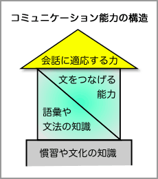

箇条書きとは？
まとまった内容を表現するときに、ひとつ事柄をひとつの項目として書き並べる書き方を「箇条書き（にする）」という。箇条書きにして書かれたものが、箇条書きである。
例えば、
わたしの趣味は、水泳をすること、書道をすること、みんなでカラオケに行くこと、英会話をすることです。
という文を箇条書きで表現すると、
- わたしの趣味
-
- 水泳
- 書道
- カラオケ
- 英会話
のようになる。
ビジネス文書では、効率的であることや、整然として見えることから箇条書きがしばしば用いられる。
箇条書きの特徴と利点
箇条書きの特徴は、読みやすいということである。箇条書きでは、ひとつひとつの項目が視覚的にはっきりしていて、さらに、全体の姿も見通しやすいため、効率的に情報を伝達することができる。
箇条書きの利点を次にまとめる。
- 書く側の利点
-
- 文章構成が不要なので手軽に書ける
- 書きながら内容を整理・確認できる
- 内容の修正(項目の増減など)が容易
- 読む側の利点
-
- 文章よりも素早く読むことができる
- 項目が独立していて、理解しやすい
- 全体イメージが直観的に把握できる
箇条書きをするときの注意点
箇条書きをするときには、以下の点に注意する。
図や表との使い分け
箇条書きには、箇条書きに適したデータを用いるようにする。箇条書きに適したデータとは、次のようなものであると思われる。
個々の項目が長すぎない
ひとつひとつの項目が長いときには、箇条書きは効果的ではない。素早く読めるという利点が失われてしまうからである。
そのため、項目が長くなるときには、一般的な文章の形で書くのがよいだろう。
項目の総数が多すぎない
項目の総数が多いときにも、箇条書きは効果的ではない。全体イメージが直観的に把握できるという利点が失われてしまうからである。
そのため、項目の総数が多いときには、罫線を引いて一覧表にするのがよいであろう。
項目の次元が少ない
項目の次元が多くなると、全体を入れ子構造にすることになる。そのため、項目の次元が多くなると見づらくなってしまう。
たとえば、次の箇条書き（入れ子構造になったもの）を見てみよう。
- 年間の犯罪件数
- 年間の凶悪・暴力犯罪件数
- 総人口
- 日本：約1億2776万人
- アメリカ：約2億9641万人
このような場合は、表にした方がわかりやすいであろう。
| 日本 | アメリカ |
| 年間の犯罪件数 | 約227万件 | 約1156万件 |
| 年間の凶悪・暴力犯罪件数 | 約７万件 | 約139万件 |
| 総人口 | 約1億2776万人 | 約2億9641万人 |
項目に直接の関係がない
箇条書きは項目を単純に並べて示すものであるため、項目間の因果関係や相互関係を示すことができない。
項目間の因果関係や相互関係を示す必要があるときには図を使うのがよいだろう。
たとえば、次のような箇条書きでは、図にした方が相互関係がわかりやすいであろう。
コミュニケーション能力の構造
- 語彙や文法の知識
- 文化や慣習の知識
- 文をつなげる能力
- 会話に適応する力

上の例は、比較的単純なものだが、項目間の関係が複雑になるほど、箇条書きでは表わしづらくなる。なお、図による表現については【→図解のし方】を参照せよ。
項目は簡潔にする
箇条書きの利点のひとつは、文章よりも素早く読めるということである。そのため、ひとつひとつの項目はできるだけ簡潔にした方がよい。多くの場合、ポイントが明確になるように心掛ければ、自ずと簡潔な表現になる。
- 出入口の扉にきちんと鍵がかかっている確かめてください。
→ 出入口の施錠確認
- お客様がどのような商品を欲しがっているのかいろいろと調べてみる必要があります。
→ 顧客のニーズ調査が必要
- 締め切りは４月９日になっていますので、それまでに必ず提出するようにしてください。
→ 提出期限：４月９日（厳守）
「箇条書き」を明示
箇条書きをするときには、それが箇条書きであることを明示するべきである。具体的には、それぞれの項目を示す記号を先頭に置くようにする。
一般に、配列の順序に意味がないときは「・」や「▽」のような記号を用い、手順やランキングを示す場合など、配列の順序に意味があるときには「１．」「Ａ．」など順序を示す記号を用いる。
- うに
- このわた
- からすみ
- うに
- このわた
- からすみ
- うに
- このわた
- からすみ
句読点は使わない
箇条書きでは、末尾に句点「。」をつける必要はない。
- システムを終了する ＿ →「。」は不要
- 消灯を確認する＿
- 出入り口に施錠する＿
書き方を統一する
箇条書きでは、それぞれの項目の表記や表現を統一するべきである。
×不適切な例（表現が統一されていない）
- 松島（宮城県）
- 京都府にある天橋立
- 広島県の宮島
○書き換え例（表現を統一）
- 松島（宮城県）
- 天橋立（京都府）
- 宮島（広島県）
項目レベルを統一
箇条書きでは、それぞれの項目のレベルがあっていなければならない。レベルの違うものを並べるべきではない。なお、レベルの違うものを並べるときには、入れ子構造にしなければならない。
×不適切な例（レベルの違うものが並んでいる）
○書き換え例（入れ子構造）